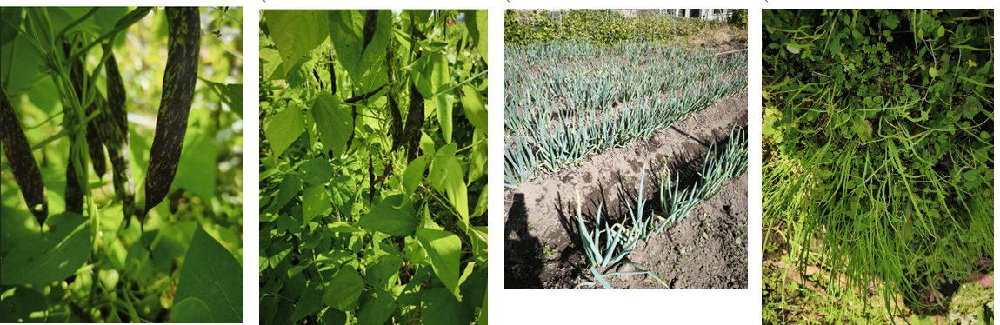
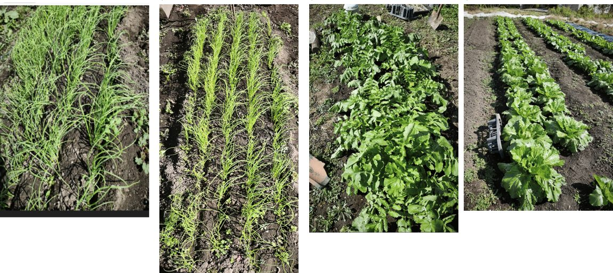

We are enjoying one fine autumn day after another, which makes it a great season for farm work. After the summer heat, our fields are steadily getting ready for the vegetables we will harvest from winter into spring.
Preparing to Plant Onions
Next week we plan to plant our onions. To get ready, we are now building the soil ridges and laying black plastic mulch. Black mulch keeps the soil warm and keeps weeds down. The onions will not be harvested until next spring, but how we care for the field before and after planting greatly affects the crop. We work the soil without compromise, so that every single seedling grows strong.
The Battle Against Weeds in Snow Peas
It will soon be time to sow our snow peas. We have already laid the black plastic mulch and are waiting for the best moment to sow. We once thought, "It is winter, so weeds will not grow much," and grew snow peas without mulch. When spring came, the whole field was covered in weeds. The snow peas were buried completely, and we could not harvest them at all. Since that painful lesson, weed control has been the most important task in how we manage our crops.
Harvest of "Beniharuka" Sweet Potatoes Has Begun
One of the joys of autumn is harvesting our "Beniharuka" sweet potatoes. Every year, when the beautiful deep reddish-purple sweet potatoes come out of the soil, I feel reassured. At Sato Farm, alongside the long-loved "Beniazuma," we are putting real effort into growing "Beniharuka," known for its strong sweetness. Beniharuka becomes sweeter when stored for a while after harvest. So we keep checking their condition to find the best time to eat them. Roasted, their creamy, sticky sweetness is truly special.
The Farm Table | Hosting Friends with the Harvest of Our Fields
Tomorrow, close friends will visit my family home in Okuwa. Since they are coming, I want to welcome them with dishes made with plenty of vegetables from our fields.
100% Buckwheat Soba with Akaiwa Flour
I plan to make 100% buckwheat soba, using local buckwheat flour from Akaiwa, a district of Nakanojo in Gunma. To be honest, last time I misjudged the amount of water. The dough would not come together and ended up almost like sobagaki (a soft, sticky buckwheat paste). Making soba by hand is a lesson every time. Even with the same flour, the result changes with the temperature and humidity of the day. This time, I want to make proper soba noodles, not sobagaki.
"Harvest Pot" on a Traditional Wood-Fired Stove (Kamado)
Over the outdoor kamado, a traditional wood-fired clay stove, we will set a large pot. We will pack it with vegetables picked that very morning, such as potatoes, sweet potatoes, kabocha squash, green beans, and Japanese leeks, and steam them all together. Freshly picked vegetables need no special seasoning. Steaming them over a strong fire brings out their natural sweetness. With just a little soy sauce or mayonnaise, it becomes a wonderful feast straight from the field.
What makes us happiest about farming is that people gather around the harvest of each season like this.
Sharing the flavors of autumn with the people we care about, and giving thanks for the harvest: these quiet moments and smiles are the best reward for keeping at farming.

